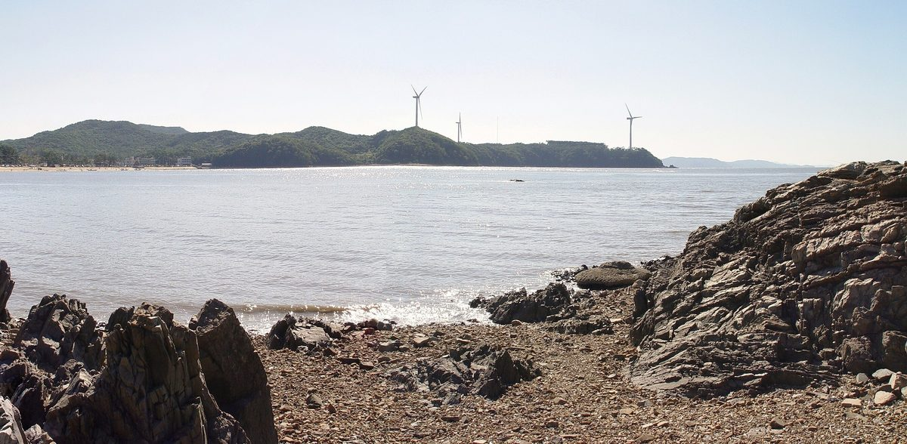

전력자급률 전국 최고 인천, 재생에너지 전담할 에너지공사 세우자는 제안

2020년 자급률 241.7%…시의원·대학교수, 주민 주주 참여·우선 고용 방안 내놔
인천이 에너지 사업을 전담할 지방공기업 '인천에너지공사'를 세워야 한다는 주장이 나왔다. 인천은 한국전력 2019년 자료 기준 전력 6만53GWh를 생산해 2만4,291GWh를 쓰고 나머지를 다른 지역으로 보냈으며, 2020년 전력자급률은 241.7%로 17개 시·도 가운데 가장 높았다. 온실가스 배출의 약 45%가 영흥화력발전소에서 나오는 가운데 인천시는 2021년 5월 재생에너지 보급 목표를 22%에서 35.7%로 올렸다. 임동주 시의회 산업경제위원장은 신재생에너지 전담 조직이 필요하다며 설립 조례와 예산을 논의하겠다고 했다. 강희찬 인천대 교수는 시가 전액 출자한 공사가 영흥화력 폐쇄 뒤 지역에너지 계획을 맡고, 주민을 주주로 참여시키거나 우선 고용하자고 제안했다.
시민에너지 관점
인천은 2020년 자급률 241.7%로 쓰는 전기의 두 배 넘게 만들었고, 온실가스의 약 45%가 한 화력발전소에서 나온다. 공사가 또 하나의 관료 조직이 될 수 있다는 우려가 있을 수 있지만, 강희찬 교수 제안처럼 주민을 주주로 들이면 공기업도 지역 소유 구조를 품을 수 있어 보인다. 부담은 지역이 지고 이익은 밖으로 나가는 구조를 바꾸는 열쇠는 결국 누가 발전소를 갖느냐에 있다. 영흥화력 이후를 준비하는 지금부터 주민 지분을 설계에 넣어야 한다.
인천시의회는 에너지공사 설립 조례를 논의할 때 주민 주주 참여와 지역 주민 우선 고용을 조례 조항으로 넣을 수 있다. 시는 영흥화력 주변 주민과 노동자가 함께하는 협의 자리를 만들어, 화력발전소 이후의 지역에너지 계획을 처음부터 함께 짜야 한다. 시민 협동조합은 공사가 맡을 재생에너지 사업 가운데 일부를 시민 출자 발전소로 나눠 맡는 방안을 먼저 제안할 수 있다.
출처: 인천투데이 2021-11-03 이서인 원문 보기
電力自給率全国トップの仁川、再エネを担うエネルギー公社の設立を求める提案
2020年の自給率241.7%…市議会議員と大学教授、住民の株主参加・優先雇用を提案
仁川がエネルギー事業を専担する地方公企業「仁川エネルギー公社」を設立すべきだという主張が出ている。韓国電力の2019年の資料によると、仁川は電力6万53GWhを生産して2万4,291GWhを消費し、残りを他地域に送っており、2020年の電力自給率は241.7%と17の市・道で最も高かった。温室効果ガス排出の約45%が霊興火力発電所から出るなか、仁川市は2021年5月、再生可能エネルギーの普及目標を22%から35.7%に引き上げた。イム・ドンジュ市議会産業経済委員長は新再生エネルギーの専担組織が必要だとして、設立条例と予算を議論すると述べた。仁川大学のカン・ヒチャン教授は、市が全額出資する公社が霊興火力の閉鎖後の地域エネルギー計画を担い、住民を株主として参加させるか優先雇用することを提案した。
市民エネルギーの視点
仁川は2020年の自給率241.7%と、使う電気の2倍以上を生産しており、温室効果ガスの約45%が一つの火力発電所から出ている。公社がもう一つの官僚組織になりかねないとの懸念もあり得るが、カン・ヒチャン教授の提案のように住民を株主として迎え入れれば、公企業も地域所有の構造を備えられるとみられる。負担は地域が負い、利益は外へ流れる構造を変える鍵は、結局のところ誰が発電所を所有するかにある。霊興火力後に備える今の段階から、住民の持ち分を設計に組み込むべきだ。
仁川市議会はエネルギー公社の設立条例を議論する際、住民の株主参加と地元住民の優先雇用を条例の条項に盛り込むことができる。市は霊興火力周辺の住民と労働者がともに参加する協議の場を設け、火力発電所後の地域エネルギー計画を最初から一緒に練るべきだ。市民協同組合は、公社が担う再生可能エネルギー事業の一部を市民出資の発電所として分担する案を先に提案できる。
出典: Incheon Today 2021-11-03 Lee Seo-in 原文を読む
电力自给率全国最高的仁川，有人提议设立专责可再生能源的能源公社
2020年自给率达241.7%，市议员和大学教授提出居民入股与优先雇用方案
有人主张，仁川应设立专门负责能源事业的地方国企"仁川能源公社"。根据韩国电力公社2019年数据，仁川发电60,053GWh，自用24,291GWh，其余输往其他地区；2020年仁川电力自给率为241.7%，在17个广域市道中最高。仁川约45%的温室气体排放来自灵兴燃煤电厂，仁川市于2021年5月将可再生能源普及目标从22%提高到35.7%。市议会产业经济委员长 Lim Dong-ju 表示需要专门负责可再生能源的组织，并将讨论设立条例和预算。仁川大学教授 Kang Hee-chan 建议由市政府全额出资设立公社，负责灵兴电厂关闭后的地方能源规划，并让居民入股或优先雇用居民。
市民能源视角
2020年仁川电力自给率达241.7%，发电量是用电量的两倍多，约45%的温室气体排放来自一座燃煤电厂。或许有人担心公社会成为又一个官僚机构，但正如 Kang Hee-chan 教授所提议，若吸收居民入股，国企也可以容纳地方所有的结构。要改变地方承担负担、利益外流的结构，关键终究在于谁拥有电站。从现在为灵兴电厂之后做准备开始，就应把居民股份纳入设计。
仁川市议会讨论能源公社设立条例时，可以把居民入股和优先雇用当地居民写入条例条款。市政府应建立灵兴电厂周边居民和劳动者共同参与的协商平台，从一开始就共同制定燃煤电厂之后的地方能源规划。市民合作社可以率先提出方案，把公社承担的部分可再生能源项目交由市民出资电站分担。
来源: 仁川今日 2021-11-03 Lee Seo-in 查看原文
Incheon, the most power-surplus region in Korea, urged to set up an energy corporation for renewables
Self-sufficiency of 241.7% in 2020; a councilor and a professor propose resident shareholding and local hiring
There are calls for Incheon to create a municipal corporation, the Incheon Energy Corporation, dedicated to energy projects. According to 2019 data from Korea Electric Power Corporation, Incheon generated 60,053GWh, used 24,291GWh and sent the rest to other regions; its power self-sufficiency rate in 2020 was 241.7%, the highest of Korea's 17 metropolitan and provincial governments. With about 45% of the city's greenhouse gas emissions coming from the Yeongheung coal plant, the city raised its renewable target from 22% to 35.7% in May 2021. Lim Dong-ju, chair of the city council's industry and economy committee, said a dedicated renewable energy body was needed and that he would discuss an enabling ordinance and budget. Incheon National University professor Kang Hee-chan proposed a corporation fully funded by the city to plan local energy after Yeongheung closes, with residents brought in as shareholders or given hiring priority.
Citizen Energy View
With a 241.7% self-sufficiency rate in 2020, Incheon generated more than twice the power it used, and about 45% of its greenhouse gas emissions come from a single coal plant. Some may worry that a corporation would become another bureaucracy, but bringing residents in as shareholders, as Professor Kang proposed, appears to let even a public company contain local ownership. The key to changing a structure where the region bears the burden while the gains flow out is, in the end, who owns the plants. Resident equity should be written into the design now, as Incheon prepares for life after Yeongheung.
When the Incheon City Council discusses the ordinance founding an energy corporation, it could write resident shareholding and priority hiring of local residents into its provisions. The city should set up a forum where residents and workers around the Yeongheung coal plant sit together, so that the local energy plan for the post-coal era is drawn up jointly from the start. Citizen cooperatives could be first to propose taking on part of the corporation's renewable projects as citizen-funded plants.
Source: Incheon Today 2021-11-03 Lee Seo-in Read the original